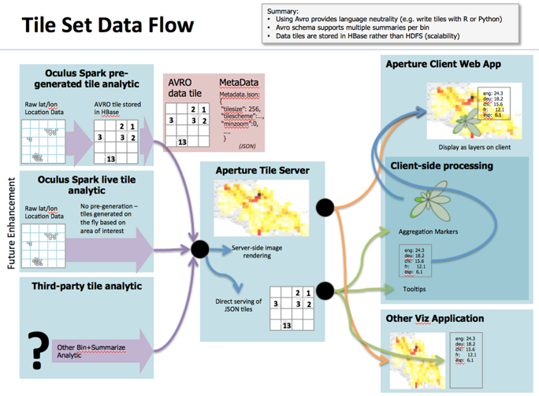

Millions of Tweets across Europe
Millions of Tweets across Europe
Aperture Tiles Overview
Aperture-Tiles provides a single, consistent tool which effectively leverages tiling to visualize data at any scale. Effectively using a tiling approach has multiple advantages such as visualizing and computing analytics at multiple resolutions. Many good JavaScript libraries exist for interacting with tiled images. Tiling can provide effective data compression and efficient distribution for extreme scale data. Due to the increasing exposure of apps such as Google Maps, tile interactions have become familiar and widespread. However, a conventional tiling approach is currently limited by two critical restraints. Tiles can take a long time to generate and data values are baked into rendered tiles, resulting in stale tiles representing dynamic data. Aperture-Tiles addresses these drawbacks by using distributed computation to quickly generate data for tiles and defining reproducible data flows which can regenerate tiles from live data, reducing tile staleness. Separation of tile data from rendering supports agile development and creation of interactive tiles using web-based client side rendering such as ApertureJS.
Tile-based Visual Analytics for Interactive Visualization
The aggregation stage projects and bins data into a predefined grid, such as the Tiling Map Service standard with a (z,x,y) coordinate system where z identifies the zoom level, and x,y identifies a specific tile on the plot for the given z. The summarization stage applies one or more summary statistics or other analytics to the data in each tile region storing the result in a data store. The rendering stage maps the summary to a visual representation, and renders it to an image tile at request time.
A Flexible Data Flow
Aperture-Tiles implements a data flow which breaks the visualization process into three distinct components: tile generation, tile server, and tile client. This flexible framework makes Aperture-Tiles compatible with both native and external data analysis and presentation features.
